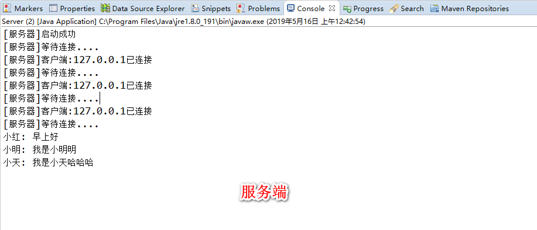
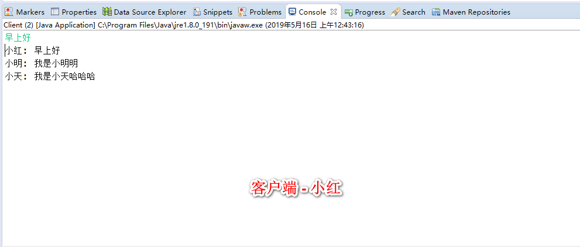
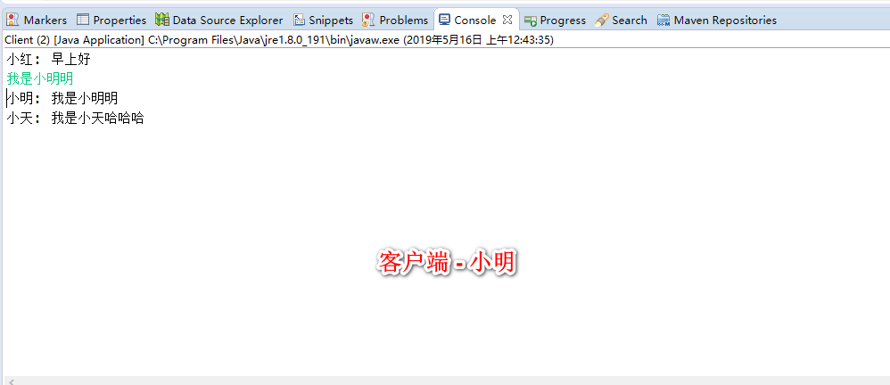

Socket实现多人聊天室功能(未完)
socket也叫套接字, 是为了方便程序员进行网络开发而被设计出来的编程接口. socket在七层模型中是应该属于传输层(TCP,UDP协议)之上 的一个抽象接口.
OSI七层模型
应用层
网络服务与最终用户的一个接口。
协议有：HTTP FTP TFTP SMTP SNMP DNS TELNET HTTPS POP3 DHCP
表示层
数据的表示、安全、压缩。（在五层模型里面已经合并到了应用层）
格式有，JPEG、ASCll、DECOIC、加密格式等
会话层
建立、管理、终止会话。（在五层模型里面已经合并到了应用层）
对应主机进程，指本地主机与远程主机正在进行的会话
传输层
定义传输数据的协议端口号，以及流控和差错校验。
协议有：TCP UDP，数据包一旦离开网卡即进入网络传输层
网络层
进行逻辑地址寻址，实现不同网络之间的路径选择。
协议有：ICMP IGMP IP（IPV4 IPV6） ARP RARP
数据链路层
建立逻辑连接、进行硬件地址寻址、差错校验 [2] 等功能。（由底层网络定义协议）
将比特组合成字节进而组合成帧，用MAC地址访问介质，错误发现但不能纠正。
物理层
建立、维护、断开物理连接。（由底层网络定义协议）
从上面的七层模型中我们可以知道建立socket连接是需要IP地址和端口号的, 好了, 废话不多说, 直接进入代码环节.
(待完成) 解释socket的接口
(待完成) 先写简单socket的demo来解释阻塞式IO, 才能更好的理解为什么后面需要用到多线程实现多客户端同时连接
~~
实现简单聊天室功能
聊天室服务端
设计: 一个线程在不断的accept新客户端的连接, 每收到一个客户端连接就起一个线程来监听该客户端的输入流, 并记录该向客户的out流到listeners中, 当收到信息时广播到所有客户端out流中
代码: Server.java
package socket.chatroom;
import java.io.IOException;
import java.io.InputStream;
import java.io.OutputStream;
import java.net.ServerSocket;
import java.net.Socket;
import java.util.ArrayList;
import java.util.List;
import java.util.Scanner;
/**
* 服务器, 这里需要一直在accept, 所以监听输入流的工作就交给另一个线程
* @author Kenny
*
*/
public class Server {
static List<OutputStream> listeners = new ArrayList<>(16);
static final int PORT = 10000;
public static void main(String[] args) {
Server server = new Server();
server.startServer();
}
private void startServer() {
try (
ServerSocket server = new ServerSocket(PORT);
){
System.out.println("[服务器]启动成功");
while (true) {
System.out.println("[服务器]等待连接....");
try {
// 阻塞直到有客户端连接过来
Socket socket = server.accept();
System.out.println("[服务器]客户端:" + socket.getInetAddress().getHostAddress()
+ "已连接");
handle(socket);
} catch (Exception e) {
System.out.println("[异常]连接中断:" + e.getMessage());
}
}
} catch (Exception e) {
e.printStackTrace();
}
}
/**
* 处理socket,多线程监听客户端输入流
* @param scanner
* @param socket
* @throws IOException
*/
private void handle(Socket socket) throws IOException {
InputStream in = socket.getInputStream();
OutputStream out = socket.getOutputStream();
// 将客户倾听者注册到广播列表里
addListener(out);
// 监听客户端发来的消息的线程, 收到客户端消息时, 广播出去
new Thread(new ServerReadThread(in, out, this)).start();
}
/**
* ArrayList是线程非安全的, 多线程下操作要注意
* @param out
*/
public synchronized void addListener(OutputStream out) {
this.listeners.add(out);
}
public synchronized void removeListener(OutputStream out) {
this.listeners.remove(out);
}
/**
* 推送消息
* @param message
*/
public synchronized void push(String message) {
listeners.forEach(out -> {
try {
out.write(message.getBytes());
out.flush();
} catch (IOException e) {
e.printStackTrace();
}
});
}
}
ServerReadThread.java
package socket.chatroom;
import java.io.IOException;
import java.io.InputStream;
import java.io.OutputStream;
/**
* 客户端读广播的线程
* @author Kenny
*
*/
class ServerReadThread implements Runnable {
private InputStream in; // 客户端向服务器的输入流
private OutputStream out; // 向客户端的输出流, 保存该对象是为了IO结束时关闭out并从server.listener中删除
private Server server; // 服务器
public ServerReadThread(InputStream in, OutputStream out, Server server) {
this.in = in;
this.server = server;
}
@Override
public void run() {
try (
InputStream in = this.in;
) {
byte[] buffer = new byte[1024];
int len = -1;
while ((len = in.read(buffer)) != -1) {
// 读信息
String message = new String(buffer, 0, len);
System.out.println(message);
// 广播消息
server.push(message);
}
} catch (IOException e) {
e.printStackTrace();
} finally {
// IO结束, 关闭out, 从server中清除该out
try {
if (out != null)
out.close();
} catch (IOException e) {
e.printStackTrace();
}
server.removeListener(out);
}
}
}
聊天室客户端
设计: 主线程监听Scanner输入流, 并向服务器发送数据, 另起一个线程监听服务器向客户端的输入流 Client.java
package socket.chatroom;
import java.io.IOException;
import java.io.InputStream;
import java.io.OutputStream;
import java.net.Socket;
import java.util.Scanner;
/**
* 简单socket客户端demo
* @author Kenny
*
*/
public class Client {
private String name;
public Client(String name) {
this.name = name;
}
public static void main(String[] args) {
Client client = new Client("小红");
client.connect();
}
private void connect() {
try (
Scanner scanner = new Scanner(System.in);
Socket socket = new Socket("127.0.0.1", Server.PORT);
OutputStream out = socket.getOutputStream();
InputStream in = socket.getInputStream();
) {
handle(scanner, in, out);
} catch (IOException e) {
e.printStackTrace();
}
}
/**
* 主线程监听客户输入信息,并发送给服务端, 另起一个线程监听服务端发来的信息
* @param scanner 扫描客户窗口输入信息
* @param in 服务端向客户端的输入流
* @param out 客户端向服务端的输出流,scanner扫描到的信息将会写到out里
* @throws IOException
*/
private void handle(Scanner scanner, InputStream in, OutputStream out) throws IOException {
new Thread(new ClientReadThread(in)).start();
while (scanner.hasNextLine()) {
// 写信息
String message = scanner.nextLine();
message = name + ": " + message;
out.write(message.getBytes());
out.flush();
}
}
}
ClientReadThread.java
package socket.chatroom;
import java.io.IOException;
import java.io.InputStream;
/**
* 客户端读广播的线程
* @author Kenny
*
*/
class ClientReadThread implements Runnable {
private InputStream in; // 服务器向客户端的输入流
public ClientReadThread(InputStream in) {
this.in = in;
}
@Override
public void run() {
try (
InputStream in = this.in;
) {
byte[] buffer = new byte[1024];
int len = -1;
while ((len = in.read(buffer)) != -1) {
// 读信息
String message = new String(buffer, 0, len);
System.out.println(message);
}
} catch (IOException e) {
e.printStackTrace();
}
}
}
运行结果


